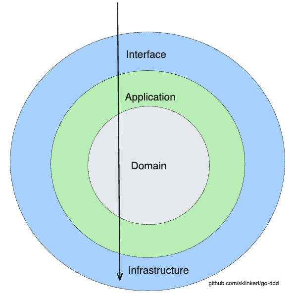

Architecture reference¶
The one-page version of the rules the tutorial builds up. If you're evaluating the template or enforcing conventions in review, this is the page to keep open.
The onion¶

Dependencies point inward only. The domain sits at the center and imports nothing from the layers around it.
internal/
├── domain/ # entities, value objects, events, repository INTERFACES
├── application/ # commands, queries, services (orchestration)
├── infrastructure/ # Postgres/sqlc repositories, outbox relay, config
└── interface/ # REST controllers, DTOs
| Layer | May import | Must never import |
|---|---|---|
domain |
stdlib, google/uuid |
application, infrastructure, interface, any framework or driver |
application |
domain | infrastructure, interface, Echo, pgx |
infrastructure |
domain, application | interface |
interface |
application, domain (types only) | infrastructure |
The wiring point where everything meets is cmd/marketplace/main.go: it constructs concrete repositories, injects them into services, and hands services to controllers. No other file knows all the layers.
Layer responsibilities¶
Domain (tutorial 1–4) — the model. Entities enforce their invariants via constructors and validate(); value objects like Money are unconstructible in invalid states; aggregates reference each other by Id only; repository interfaces declare what persistence the model needs. Errors are sentinels (ErrValidation, ErrProductNotFound) that outer layers translate.
Application (tutorial 6, 8) — the use cases. Commands and queries as explicit types; services orchestrate (load aggregates, invoke domain behavior, persist) but never decide business rules; the withIdempotency decorator makes every command retry-safe. Results are output shapes, not entities.
Infrastructure (tutorial 5, 7) — the details. sqlc-generated, type-safe SQL behind the domain's repository interfaces; row-to-entity mapping routes through validating constructors; the aggregate write and its outbox events share one transaction; the relay polls and publishes with at-least-once semantics.
Interface — the edge. Echo controllers parse DTOs, call services, and map sentinel errors to status codes in errors.go: ErrProductNotFound → 404, ErrValidation → 400, ErrRequestInFlight → 409, ErrIdempotencyKeyReuse → 422. DTOs use explicit primitives (price_minor_units, not price) so the wire format can never be ambiguous.
The request flows¶
Write path:
sequenceDiagram
participant C as Client
participant R as REST Controller
participant S as ProductService
participant D as Domain
participant P as Postgres
C->>R: POST /api/v1/products
R->>S: CreateProductCommand
S->>P: Reserve idempotency key (atomic INSERT)
S->>D: NewMoney, NewProduct, NewValidatedProduct
D-->>S: ValidatedProduct + recorded events
S->>P: One tx: product row + outbox events
S->>P: Store cached response
S-->>R: CommandResult
R-->>C: 201 CreatedRead path: controller → query → service → repository → result mapping. No entity construction ceremony, no idempotency, no events — reads have no business rules.
Event path: outbox relay polls outbox_events WHERE published_at IS NULL (partial index), hands each to a Publisher, marks published. At-least-once; consumers deduplicate on the UUIDv7 event Id.
Conventions that keep the codebase consistent¶
- Constructors everywhere.
NewXfor every entity and value object; struct literals for domain types are a review flag outside theentitiespackage and its tests. ValidatedXtypes at trust boundaries. Repository write methods accept only validated types — the compiler enforces the validation contract.- Sentinel errors, wrapped with
%w. Match witherrors.Is; never branch on error strings. Id, notID. House style, enforced deliberately (the corresponding staticcheck rules are disabled in.golangci.ymlon purpose).- Soft deletes.
deleted_atcolumns; every read query filtersdeleted_at IS NULL. Deleted data is invisible, not gone. - Migrations are append-only. Schema evolves through numbered
migrations/pairs (up/down); sqlc regenerates the query layer fromsql/queries/viamake sqlc. - Defaults live where the invariant lives. Business defaults belong in domain code, not split between code and DB where they can drift.
Tooling map¶
| Concern | Tool | Where |
|---|---|---|
| HTTP | Echo v4 | internal/interface/api/rest/ |
| DB access | pgx/v5 + sqlc | internal/infrastructure/db/ |
| Migrations | golang-migrate | migrations/, migrate.go |
| Logging | slog | throughout |
| Tests | testify + testcontainers | *_test.go, internal/testhelpers/ |
| Lint | golangci-lint v2 | .golangci.yml |
| API contract | OpenAPI 3 | api/openapi.yaml |
| Ops probes | /healthz, /readyz |
internal/interface/api/rest/health_controller.go |
For the reasoning behind each of these decisions, the tutorial walks them in order; for the trade-offs, the FAQ.